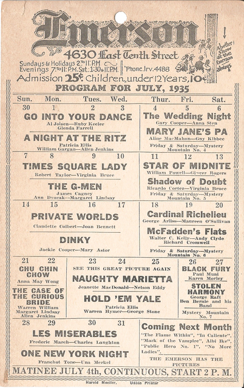
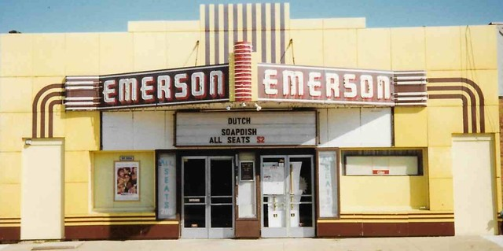

The Emerson Theater
On December 11, 1927, Albert H. Heady opened the Eastland Theater at 4630 East 10th Street, within the eponymously named neighborhood. Just a few years after opening, Heady remodeled the theatre and equipped it with the new RCA Photophone sound system. Henry Calloway purchased the renovated theater, assumed management, and reopened the venue as the Emerson Theater on October 7, 1930.

Calloway maintained ownership of the building through the 1940s, but he sold a 15-year lease to the Marlene Theater Group, owned by Indiana theater operator Mannie Marcus in April of 1937. The Marlene Group updated the building and added a new marquee to the exterior. The theater ran double features as well as the occasional special programming, such as cartoons for children, filmed sporting events, and short films. The theater also served as a special event space.
The theatre closed upon expiration of the lease on June 1, 1955. A few months later, it reopened after upgrades such as CinemaScope and new push-back seating. The theater continued to serve as a popular neighborhood spot for the next two decades.
Emerson Theater underwent several changes throughout the 1970s and 1980s amid falling attendance numbers. In August 1980, Heaston Theaters bought the Emerson, increased ticket prices, and brought in foreign, cult, and older films in an effort to reach a wider audience. These tactics failed, and the theater closed on September 29, 1983. It reopened under new ownership in 1984 but closed as a movie house in October 1992.
